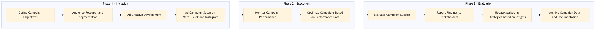

This process document outlines the steps for executing a social media advertising campaign on Meta TikTok and Instagram, focusing on optimizing performance marketing efforts for OTA (Online Travel Agency) and TMC (Travel Management Company) systems.
| Trigger | Initiation of a new social media advertising campaign by the Marketing team with clear objectives and budget allocation. |
| Outcome | A successful campaign that achieves or exceeds predefined KPIs, such as increased brand awareness, higher engagement rates, and improved conversion rates from social media ads to bookings. |
| Systems | Expedia Open World Partner Central Amadeus NDC Sabre GDS Travelport EVC One Key TravelAds AWS SageMaker Snowflake Kafka Salesforce Tableau Concur T2 Concur Expense Amex GBT Neo/Complete International SOS Cvent Amex Corporate Card VCN Analytics Cloud Workday |

Click to enlarge
| Step | Name & Pain Point | Role | System | Input | Output | KPI | Flags |
|---|---|---|---|---|---|---|---|
| 1.1 | Define Campaign Objectives Aligning business goals with marketing objectives | Marketing Manager | Expedia Open World, Partner Central | Campaign goals, target audience, budget allocation | Campaign brief and strategy document | Clear objectives outlined in the campaign brief | ⚠ Exception |
| 1.2 | Audience Research and Segmentation Data quality and relevance | Data Analyst | Snowflake, Tableau | Historical data on customer behavior, demographics | Target audience segments | Accurate segmentation of target audience | ⚠ Exception |
| 1.3 | Ad Creative Development Creative alignment with brand identity | Creative Director | Adobe Creative Suite, AWS SageMaker | Campaign brief, audience insights | Visual and video ad creatives | High-quality creative assets ready for deployment | ⚠ Exception |
| 1.4 | Ad Campaign Setup on Meta TikTok and Instagram Technical setup issues | Social Media Manager | TravelAds, Facebook Business Manager | Campaign brief, ad creatives, audience segments | Active social media campaigns | Campaigns live and running | ⚠ Exception |
| 1.5 | Monitor Campaign Performance Data integration and processing delays | Performance Analyst | Snowflake, Tableau, Kafka | Campaign data from social media platforms | Daily performance reports | Real-time monitoring of campaign metrics | ◆ Decision |
| 1.6 | Optimize Campaigns Based on Performance Data Balancing creativity with data-driven decisions | Social Media Manager, Marketing Manager | TravelAds, Facebook Business Manager | Performance reports, campaign brief | Adjusted campaigns with improved targeting and creatives | Improved conversion rates and engagement metrics | ◆ Decision |
| 1.7 | Evaluate Campaign Success Interpreting complex data for actionable insights | Marketing Manager, Data Analyst | Snowflake, Tableau | Final campaign performance data | Campaign evaluation report | Achievement of campaign objectives and KPIs | ⚠ Exception |
| 1.8 | Report Findings to Stakeholders Effective communication of technical data | Marketing Manager, Business Analyst | Salesforce, Tableau | Campaign evaluation report | Presentation and documentation of findings | Stakeholder buy-in for future campaigns | ⚠ Exception |
| 1.9 | Update Marketing Strategies Based on Insights Strategic alignment with business goals | Marketing Manager, Strategy Lead | Expedia Open World, Partner Central | Campaign evaluation report, market trends | Updated marketing strategy document | Incorporation of insights into future campaigns | ⚠ Exception |
| 1.10 | Archive Campaign Data and Documentation Data retention and compliance | Data Analyst, IT Support | Snowflake, AWS S3 | Campaign data, reports, documentation | Archived campaign assets | Complete archiving of all campaign-related materials | ⚠ Exception |